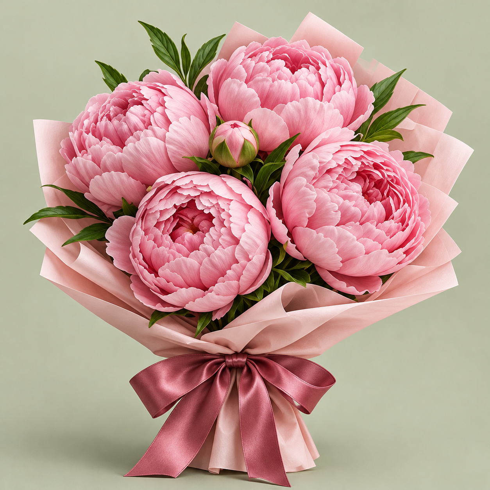

Искусство флористики
История «Флоры» началась с небольшой мастерской на Цветном бульваре. Первые букеты здесь собирали для друзей и соседей — не по готовому шаблону, а под характер человека и смысл события.
Со временем этот подход стал основой нашей флористики: сезонные цветы, спокойная палитра и свободная форма, собранная вручную в день заказа.
Цветной бульвар, 15 · ежедневно 09:00–21:00


Сохраняем характер
Композиция может меняться вместе с сезоном, но её палитра, размер и настроение остаются узнаваемыми.
- Состав виден заранее
- Основные цветы и зелень указаны в карточке композиции до заказа.
- Замены согласуем
- Если точного цветка нет, сохраняем выбранную палитру, размер и общее настроение букета.
- Открытку подпишем
- Добавим ваши слова к букету без доплаты и передадим вместе с композицией.

Выберите настроение
Мы покажем букеты с подходящим характером и палитрой.
Пудровые оттенки, округлые формы и мягкие переходы цвета.
Смотреть подборку